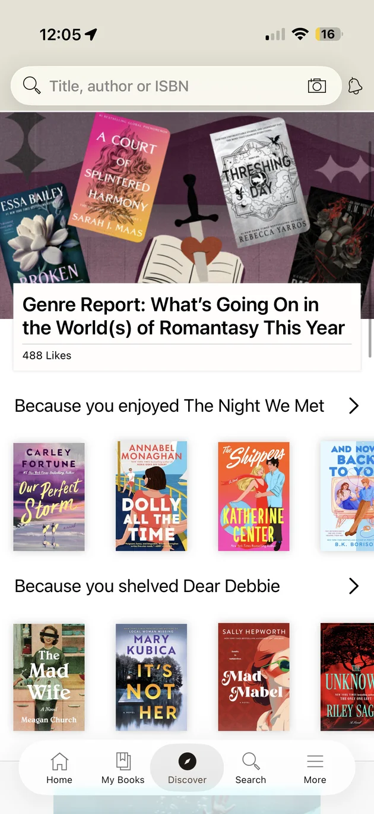
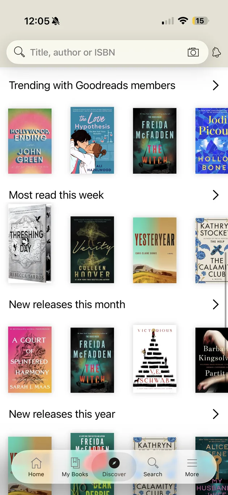
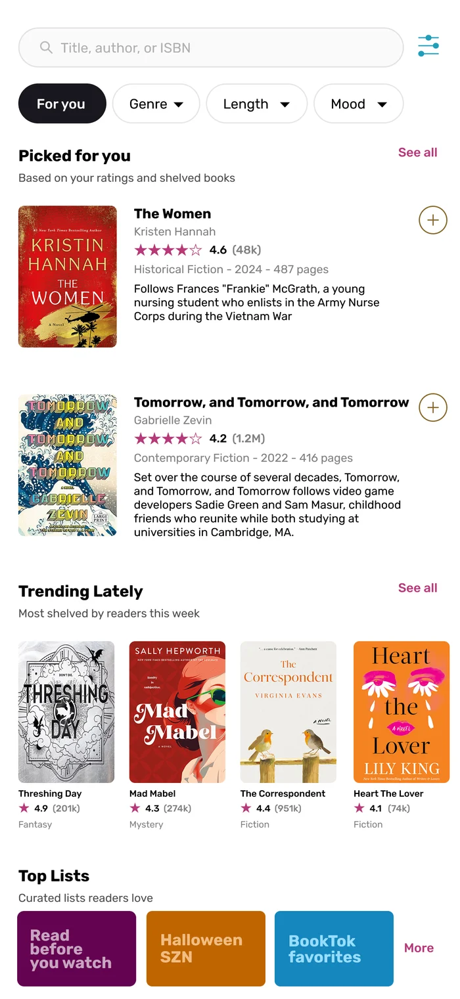

This is an independent concept project. I am not affiliated with Goodreads or Amazon. The "before" screens are screenshots of the iOS app taken in October 2026. The redesign is my own mockup: ratings and review counts in it are sample data, and book covers belong to their publishers and are shown for illustration only.
The short version
Discover is where readers go to find their next book. On the Goodreads app it is a long stack of cover-only rows, and the same books keep showing up in different rows. I wanted to see how much clearer it could be if every book came with the details readers actually use to decide, and if readers could steer the page themselves.
I started with the page as it is today, wrote down what gets in the way, and redesigned the screen around those problems. The concept is in progress, and the next step is testing it with readers.
The page today
Discover opens with a search bar and one large editorial card, followed by rows of book covers. Two rows are personal ("Because you enjoyed…", "Because you shelved…"). Below them are generic rows: trending, most read this week, and new releases this month and this year.

Before: the top of Discover

Before: further down the page
What gets in the way
I went through the page as a reader looking for a book to start this weekend. Five problems stood out.
The same books repeat.The same title can sit in three rows on one screen. The Witch appears in Trending, New releases this month and New releases this year. When the page repeats itself, it stops feeling like it knows my taste.Observed in the app
Covers carry all the weight.Cards show a cover and nothing else. There is no star rating, genre or summary, and those are the first things I check when I decide whether to read something.Observed in the app + my own habits
"Because you…" does not say why.The row names a book I enjoyed, but not what it has in common with the books below it, so I can't judge whether the match makes sense.Observed in the app
No way to narrow things down.There are no genre, length or mood controls on the page. The only way to steer is to leave Discover and search.Observed in the app
It is not built around how people find books now.I often hear about a book on TikTok and then search it on Goodreads to check the rating. Discover doesn't pick up that moment, such as books that are being talked about or adapted into a movie or show.My own experience
These come from the screens and from my own use as a heavy reader. I am treating them as hypotheses until I have talked with other readers.
Who it is for
I designed for heavy readers: people who read often, already know what they like, and are quickest to notice a page that repeats itself or ignores their taste. They also tend to find books through social media, so Goodreads is often the place where they check a recommendation, not where they first hear about it.
The redesign
Each change answers one of the problems above. I kept the familiar structure of a search bar and rows of books so the page still feels like Goodreads, and made each row more useful.

After: concept mockup
Problem 1: repeatsEach book gets one place on the page.Personal picks, trending books and curated lists each show different titles, so scrolling always shows something new.
Problem 2: covers onlyCards carry the details readers use to decide.Rating and number of ratings, genre, year, page count and a one-sentence summary sit beside the cover. In the Trending row, rating and genre sit under each cover.
Problem 3: unclear reasonsSay where picks come from.The section reads "Based on your ratings and shelved books", so the reason for the picks is stated up front. A quick "+" adds a book to Want to Read without leaving the page.
Problem 4: no way to narrowFilter chips at the top.Genre, Length and Mood sit right under the search bar, with a filter icon for everything else, so readers can steer Discover without leaving it.
Problem 5: how people find booksTop Lists built around how books spread.Tiles like "Read before you watch", "Halloween SZN" and "BookTok favorites" give readers a reason to tap, and a Trending row shows what is being shelved most this week.
What I would test next
Do readers notice repeats the way I did? Interviews with people who read regularly, including some who have left Goodreads, will show whether this is a shared frustration or just mine.
Which details matter most on a card? I would test whether rating, genre, page count and the summary all earn their space, or whether the cards get crowded.
Do the filters get used? I would watch readers try to find a book for a specific mood or length with and without the chips.
Do curated lists draw taps? Lists tied to movies, shows and social trends are my guess about what makes people click, and that needs checking.
What I learned
Looking closely at a page I use all the time showed how much is decided by what a card leaves out. A cover is a good prompt to look at a book, but it is not enough to choose one. The redesign is mostly about adding the missing information and removing repetition, and I would rather prove that with readers than assume it.